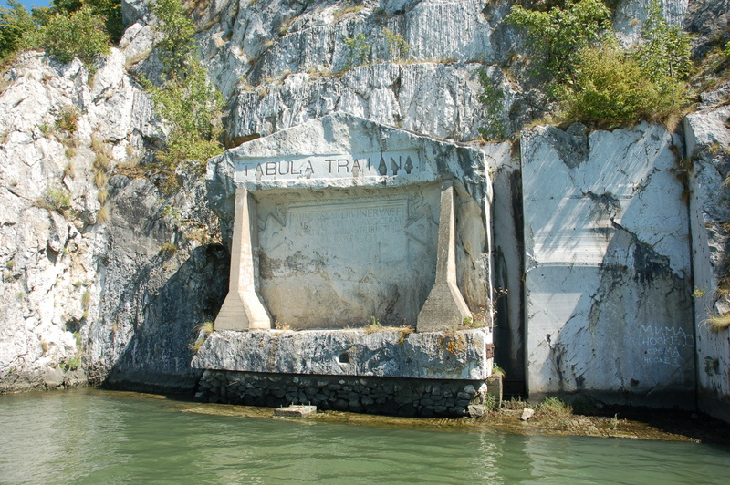

SRBIJA

Tabula Traiana je natpis uklesan u steni pored Dunava, u Đerdapskoj klisuri, 2,5 km uzvodno od Tekije, posvećen rimskom caru Trajana. Deo je grupe
antičkih spomenika na rimskom putu kojem pripadaju i ostaci mosta kojeg je Trajan sagradio preko Dunava. Trajanova tabla prvobitno je bila postavljena
na 1,5 m iznad rimskog puta pored Dunava. Tabla je, zajedno sa delom puta, 1969. isečena i po vertikali premeštena na viši nivo da bi se zaštitila od
podizanja nivoa Dunava do koga je došlo posle izgradnje Hidroelektrane „Đerdap I“.
Na osnovu natpisa pretpostavlja se da je deo đerdapskog puta u Donjoj klisuri izgradio Trajan u okviru priprema za rat protiv Dačana, odnosno da je
100. godine završena ta poslednja, najteža deonica. Ipak se sa sigurnošću ne može utvrditi da li je Trajan izgradio ili samo obnovio put u Donjoj
klisuri, čiji su ostaci registrovani na više mesta: kod Pecke Bare, kod Hajdučke Vodenice neposredno uz Trajanovu tablu i nešto nizvodno od ovog mesta.
Izgradnja rimskog puta i velikog broja utvrđenja pokazuje značaj Đerdapa za Rimsku imperiju, sve do konačnog osvajanje Dakije početkom 2. veka.
Izgradnja puta, koji se prostirao uz sam Dunav, bila je uslovljena potrebama brže i bezbednije plovidbe.
Natpis na tabli je u polju oblika tabula ansata, uklesan u šest redova, ali se danas jasno očitavaju samo tri. Od njene bogate reljefne dekoracije
očuvan je jedino friz sa predstavom orla, kao i figure krilatih genija. Ispod natpisa je figura koja kleči, verovatno Danubius, a iznad je nadstrešnica
sa kasetiranom tavanicom. Kasete su ukrašene rozetama i predstavama orla sa raširenim krilima, dok je sa strane reljefni prikaz dva delfina.
U prevodu sa latinskog, na Trajanovoj tabli piše: „Imperator cezar, sin božanskog Nerve, Nerva Trajan Avgust, pobednik nad Germanima, veliki pontif,
četrti put postavljen za tribuna, otac domovine, konzul po treći put, planine je isklesao i postavio grede od kojih je napravljen ovaj put“.